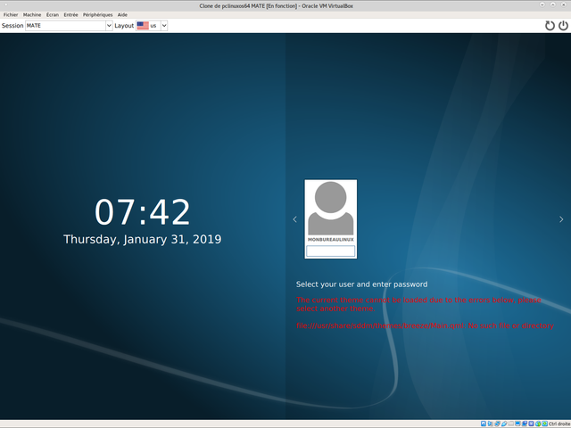

◉ ○ ○ ○ ○ ○ ○ ○
20:17
◉ ○ ○ ○ ○ ○ ○ ○
Lo primero que hay que hacer es instalar el sistema operativo linux que se desea usar. Existen varias distribuciones y cualquiera de estas es válida para hacer un rice, por ejemplo, Arch, Debian, Fedora, Ubuntu o Manjaro entre otras. La unica diferencia al hacer el rice probablemente sea el nombre de los paquetes que variará según la distribución.
Como he dicho, cualquier distribución es válida en ricing linux, sin embargo, hay distribuciones que la comunidad recomienda más como Arch linux o Gentoo, ya que son estables y permiten hacer instalaciones básicas que no instalarán ningún software no deseado, sin embargo, estas tienen una instalación más compleja que otras distribuciones.

Una vez tenemos el sistema operativo, toca empezar a instalar
los paquetes necesarios para el rice. Yo elegí utilizar Archlinux porque es de los sistemas
más populares para rices, por lo tanto, hay una gran comunidad de usuarios que pueden ayudarme
en caso de necesitarlo. Lo primero que instalaré serán los paquetes: bspwm (el WM), sxhkd (para atajos de teclado),
sddm (parala pantalla de inicio de sesión del sistema operativo), kitty (la terminal), polybar (para la barra
de tareas) y rofi (para poder lanzar aplicaciones). Para esto se escribe el siguiente comando.
sudo pacman -S bspwm kitty sxhkd addm rofi polybar
Luego hay que activar el greeter (la pantalla de inicio de sesión del sistema operativo)
sudo systemctl enable sddm
Y por último, al reiniciar ya debería salirnos una interfaz gráfica, sin embargo, tras iniciar sesión, veremos
una pantalla compleamente negra, esto es porque ahora es cuando toca personalizar el sistema operativo.
No voy a entrar muy en profundidad sobre las configuraciones de cada herramienta instalada, sin embargo daré
unas nociones básicas.
Rofi es el programa que nos servirá par apoder lanzar las aplicaciones que tengamos instaladas en nuestro sistema operativo. Al iniciar rofi aparecerá una ventana con un buscador, ahí tenemos que buscar nuestras aplicaciones.

Sddm es el greeter, es decir, nos permite iniciar sesión en la interfaz gráfica con usuario y contraseña del sistema operativo. Sddm es un greeter bastante simple pero es fácil de instalar y tiene opciones para personalizarlo.
Kitty es la terminal con la que escribiremos los comandos de Linux. Kitty es una terminal sencilla, liviana y muy personalizable por lo que es perfecta para este proyecto.

Bspwm es el WM que usaremos. El WM es lo más importante del rice ya que es lo que se va a ver como interfaz gráfica. Bspwm es un Window Manager ligero y sencillo de configurar por lo que aunque requiere algo de conocimientos y sobre todo investigación, es bastante fácil de usar.

Por último, hablaré de otra de las herramientas más importantes del rice, sxhkd. Sxhkd es el programa que usaremos para movernos a través del sistema operativo gracias a atajos de teclado. Sxhkd es un programa que está muy extendido y permite la configuración de combinaciones de teclas personalizadas para realizar las diferentes tareas.